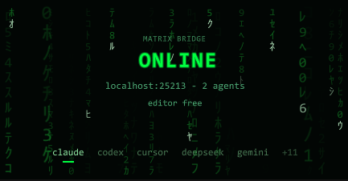

Everyday use
The Bridge window
The Bridge window is the control panel of the link: whether Unity is reachable, who is connected, which tool is running, who holds the Editor, and which clients are wired.
Open it with . Dock it anywhere; a short wide strip is enough.


Reading it from top to bottom#
| Part | What it tells you |
|---|---|
| State word | OFFLINE: not linked. LINKING: starting the server or reconnecting, for example after a script reload. ONLINE: ready. WORKING: a tool is running right now. PLAY TESTING: a session is playing the game. FAULT: the server failed to start; click the word to retry. |
localhost:25213 - 2 agents | The server address and how many client sessions are connected. |
> script-execute | The tool that is running, shown while the state reads WORKING. |
editor free or a lock card | Who holds the Editor. A card shows the client's name, its task and for how long it has held it. See Several agents, one Editor. |
| Client names | Click to wire or unwire a client. A mark under the name means it is wired; amber means its config is out of date. Right-click a name to copy its config JSON. |
The window's tab icon dims while the Editor is not linked, so you can tell from a docked tab.
Turn the link on and off#
Click the state word. While it reads ONLINE, a click turns Matrix off for this project on this machine: the server stops and nothing starts on the next load. Click OFFLINE to turn it back on. The same two clicks restart the server, for example after you edit its settings file.
The ... menu#
The ... button in the top right corner opens these items:
| Item | Use it to |
|---|---|
| Copy endpoint | Paste the server URL into a client that Matrix does not list. |
| Change port | Pick another port when the default one is taken. Only while offline. A client whose config still has the old port shows an amber mark: click it to rewrite the config. |
| Logging | Set how much the server writes to its log. Raise it only while chasing a problem. |
| Skills | Open the Skills window. |
| Rain | Turn the falling-glyph background off on machines where it lags. |
| Open logs | Open the server log folder, Temp/feeder-matrix. |
| Open config file | Show UserSettings/Feeder-MCP-Config.json. See Settings file. |
| Reinstall server | Extract the bundled server again. Use it when the server fails to start after an update. |
Scene view toolbar#
Once Matrix is on, the Scene view gets a small Matrix Bridge overlay in its toolbar. Click it to open the Bridge window from where you are working.